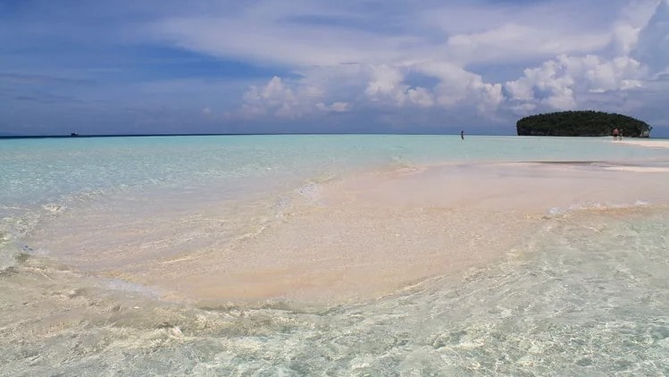

keajaiban hamparan
keindahan tersembunyi
Dari kejauhan, pantai ini terlihat seperti pulau pasir kecil yang muncul di tengah lautan, memberikan ilusi tentang kehidupan terpencil di surga tropis. Namun, ketika Anda mendekat, Anda akan menyadari bahwa pulau ini adalah murni dari pasir putih yang halus, tanpa tumbuhan atau struktur apapun, membuatnya menjadi tempat yang benar-benar unik di antara keindahan alam Raja Ampat.
Tidak banyak lagi yang bisa dikatakan tentang Pasir Timbul. Ini jelas merupakan pengalaman pantai dengan low-fi, tanpa adanya pedagang asongan, lagu Bob Marley, atau kerumunan wisatawan yang umum terjadi di Asia Tenggara. Semuanya tentang pasir putih dan air biru cerah
fenomena
Fenomena Pantai Pasir Timbul adalah sebuah keajaiban alam yang terjadi ketika pasang surut air laut mengungkapkan sejumlah pasir yang biasanya terendam di bawah permukaan air. Berikut adalah beberapa fenomena menarik terkait Pantai Pasir Timbul
Pantai Pasir Timbul terletak di daerah dengan perubahan pasang surut yang dramatis. Ketika air surut, sebagian besar pantai yang biasanya terendam air laut akan terungkap, menciptakan area pasir yang luas dan terbuka di tengah laut.
Ketika air pasang, Pantai Pasir Timbul mungkin sepenuhnya terendam di bawah air laut, membuatnya tampak seperti pulau pasir temporer yang muncul dan tenggelam sesuai dengan siklus pasang surut.

Salah satu aspek menarik dari Pantai Pasir Timbul adalah bahwa keberadaannya bersifat sementara. Ketika air surut, pantai ini muncul dengan jelas, namun ketika air pasang kembali, pantai tersebut kembali tenggelam di bawah permukaan laut.
Tidak perlu khawatir beraktivitas di Pasir Timbul Raja Ampat. Pasalnya, ketika pulau ini muncul, laut di sekitarnya tenang. Hanya ada ombak kecil yang membuat pemandangan makin cantik. Baik orang dewasa maupun anak-anak bisa beraktivitas dengan aman di sana. Apalagi, sesekali akan tampak ikan-ikan kecil aneka warna yang berenang mengitari dataran tersebut.
Pantai Pasir Timbul di Raja Ampat adalah contoh sempurna dari keajaiban alam yang belum terjamah sepenuhnya. Dengan keindahan alamnya yang memukau dan pengalaman unik yang ditawarkannya, pantai ini menjadi destinasi yang tak boleh dilewatkan bagi siapa pun yang mencari petualangan dan kedamaian di antara keindahan alam yang luar biasa di Raja Ampat.